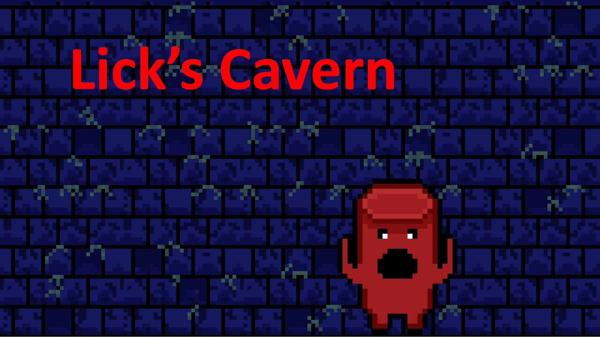

A simple lottery game where the player chooses 6 lottery balls and try to match 3 or more to win.
You can view and play the game here.
You can download a copy of the game here.
Annihilation Intelligence
Android Studio, Java, jPCT-AE
Annihilation Intelligence (AI) was my Final Year Project during my third year at university. Developed using Java in Android Studio with jPCT-AE,
a 3D solution for Java and Android.
AI is a 3D 1st Person Horror Room Escape mobile phone game developed for the Android OS, created to explore the term 'Horror Vacui', and creating a game without this concept.
The project was also a chance for me to explore creating and developing a 3D game for mobile phones, which is not covered much in my university course, as well as to see what it takes to
create an entire game, including all assets, from start to finish. In a sense this project was also designed as a look into indie games, a concept of game development which has become more
popular over the last decade or so.
Leap Engine is a group developed coursework project made during my Third year of university as part of the Games Programming module. This was created alongside four other members
as a 3D Games Engine, which was also used to create a 3D Platformer game: DiamondsInTheSky.exe. This engine made use of a structure inspired by Unity, implementing entities which
can be given components.
I worked on several different aspects of this project:
Assets & Animations
The audio assets, creating music using FL Studio and sound effects using Bfxr
Many of the 3D models and textures, including various objects such as the collectibles, the walls and platforms, as well as...
The Player and Enemy models, textures and animations, using Autodesk Maya and creating textures using Microsoft
Paint and GIMP
Programming & Design
The Audio component, which can be attached to entities to play music or sound effects, made using the sound library irrKlang
The Text Renderer component, using FreeType to draw a 2D shader on top of the 3D program for the UI
The Animated Renderer component, using Assimp to import .fbx format animations for the Player and Enemy models
Game Design elements such as the level design and gameplay mechanics
Much like my final year project Annihilation Intelligence, I was very interested in many different parts of the game engine and development, and wanted to work on
many different aspects of the engine. This project was a good chance to work as a team on a project in different areas to each other, yet still helping each other out when a problem
arises, or when there are clashes when attempting to bring the project together.
This repository is currently set to private and cannot be accessed.
You can download a copy of the game here.
Ludum Dare 38 - A Small World - Lick's Cavern

Unity, C#
I took part in a 72 hour Ludum Dare Games Jam, featuring the theme: A Small World. With only 72 hours, me and and my friend Rozen who I met during my time at univeristy
came up with and created this game using Unity, with both of us only doing most of one tutorial prior. We used this Ludum Dare as a chance to try out using Unity and C#
for games development. All parts of the game, including art and music, were created by us during the 72 hours.
For this project I worked on several areas. Assets wise, I created most of the assets used in this project, including a simple theme made using FL Studio,
and most of the sprites and tiles used in the project. These sprites were fairly basic and made quickly due to the time restriction, being created in Microsoft Paint, and using
GIMP as well for creating them, and for adding transparency.
What I worked on
On the programming side, I focused on the Player and the Enemies, and the Cards System -although this was added fairly late and it could not reach its potential-. For the player,
this included basic movement, and the Hook/Lick ability: Using the player's tongue to attack enemies, and to use as a grappling hook to traverse the map, as well as attack enemies
by grappling past them. The Cards System was an addition I made near the end of the project. I had originally planned them as power-ups the player could collect, such as cards to
increase the player's speed or damage, and as consumable power-ups to recover health or gain abilities briefly.
Overall, it was a great experience to take part in a games jam, which are always hectic and fun, but also it was a great chance to try out Unity and C#, which was barely
touched upon in university.
This website was created by me making use of Github Pages to host both the repository and the actual website. This was created using Visual Studio in HTML and CSS,
using a base TypeScript template to allow the usage of TypeScript or JavaScript for this site in the future.
You can view the repository for this website here: https://github.com/Zoa84/Zoa84.github.io
Lineout
HTML, JavaScript, CSS
Lineout is a Breakout-style game that I created during my first year of university as part of learning HTML, JavaScript and CSS.
You can view and play the game here.
You can download a copy of the game here.